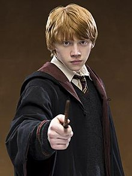

Harry Potter

Harry Potter es el protagonista de la serie de libros y películas. Es un mago huérfano que descubre que es famoso en el mundo mágico por haber sobrevivido al ataque de Lord Voldemort cuando era un bebé.
Hermione Granger

Hermione Granger es una brillante estudiante de Hogwarts. Es conocida por su inteligencia y su dedicación a los estudios. Es una gran amiga de Harry Potter y Ron Weasley.
Ron Weasley
Ron Weasley es uno de los mejores amigos de Harry Potter. Viene de una familia de magos y es conocido por su lealtad y sentido del humor. Acompaña a Harry en muchas de sus aventuras.